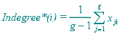

Main
Frame | Analysis | Sociometrics | Indegree
Main
Frame | Analysis | Sociometrics | Indegree
Computes the indegree (for binary data only) and the weighted indegree of each node in current network.
Two versions of the indegree are computed. The indegree* is considered appropriate in treating general networks that exclude reflexive ties (sociomatrix diagonal is always zero). The construction of the indegree** assumes that reflexive ties are possible. Although Agna does not support yet non-zero diagonal elements in sociomatrix, the ** version of the indegree is computed, as prior to Agna 2.1 only the indegree** was available.
For
a binary network, the indegree*
of a node is the total number of edges incident to it divided by the
number of all other nodes. For a weighted
network, the indegree* of a node is the sum of all values corresponding
to the edges incident to it divided by the
number of all other nodes in the network. In both cases, the mathematical expression
is: 
where g is the number of nodes and xji are the sociomatrix elements.
For
a binary network, the indegree**
of a node is the total number of edges incident to it divided by the total
number of nodes in the network. For a weighted
network, the indegree** of a node is the sum of all values corresponding
to the edges incident to it divided by the total number of nodes in the network. In both cases, the mathematical expression
is:

where g is the number of nodes and xji are the sociomatrix elements.
If the current network contains weighted data, both the weighted and unweighted indegrees will be computed. A set of statistical parameters (minimum, maximum, sum, mean, variance, standard deviation, absolute entropy, maximum entropy and relative entropy) will be computed as well for the indegree distributions.
See also: